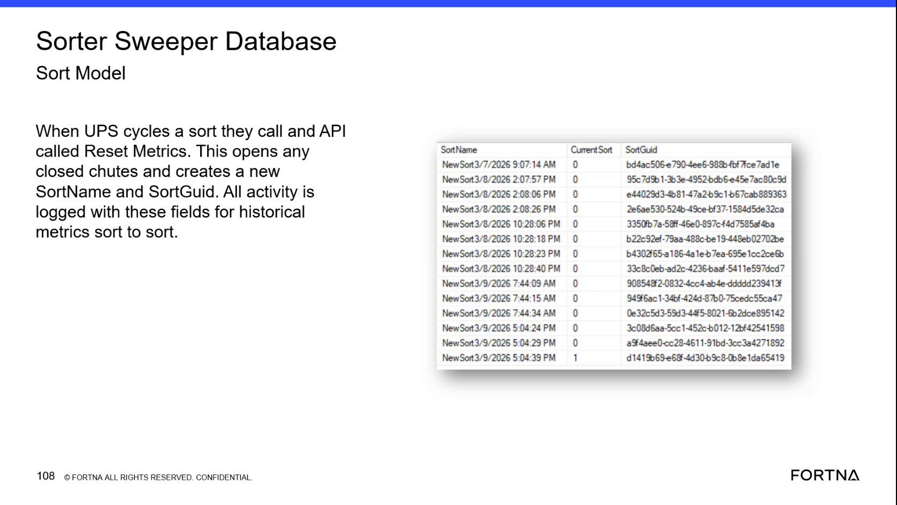

| Procedure ID | proc_check_current_sort_and_sortguid_v1 |
|---|---|
| Title | Check Current Sort and SortGuid in the Sorter Sweeper Database |
| Procedure Type | diagnostic |
| Primary Role | L2_support |
| Support Safe | Yes |
| Capability Tags | sort_lifecycle_state |
| Access Surface | wcs_sql |
| Audience Roles | L2_support, L3_support |
| Failure Pattern Tags | None |
| Validation Status | needs_sme_review |
| Merge Status | source_finalized |
Use the WCS / Helix DB (SSMS) to inspect the Sorter Sweeper Database Sort Model. Verify the visible SortName, Current Sort, and SortGuid values, identify the current sort entry, and use its SortGuid to associate investigated activity with historical sort-to-sort metrics.
Use this read-only diagnostic on the WCS / Helix DB (SSMS) when troubleshooting live sort activity or validating which sort context owns activity. Inspect the Sorter Sweeper Database Sort Model and use the displayed SortGuid for historical sort-to-sort comparison.

Responsible role: L2_support
Instruction:
In the WCS / Helix DB (SSMS), open the Sorter Sweeper Database and locate the Sort Model. Inspect the displayed SortName, Current Sort, and SortGuid fields without modifying any records.
Expected result:
The Sort Model is open and the SortName, Current Sort, and SortGuid fields are visible for the available sort records.
Stop or Escalate If:
Responsible role: L2_support
Instruction:
In the WCS / Helix DB (SSMS) Sort Model, inspect the sort entry being investigated and record its displayed SortName and SortGuid.
Expected result:
A SortName and corresponding SortGuid are visible for the investigated sort entry.
Stop or Escalate If:
Responsible role: L2_support
Instruction:
In the WCS / Helix DB (SSMS) Sort Model, inspect the Current Sort value for the entry identified as current and compare it with the Current Sort values on the other visible sort records. Use the displayed indicator as shown; do not infer an undocumented numeric meaning.
Expected result:
One sort entry can be identified as the current sort from the displayed Current Sort values, with its associated SortName and SortGuid visible.
Stop or Escalate If:
Responsible role: L2_support
Instruction:
Use the displayed SortGuid from the identified current sort entry when reviewing the activity being investigated in the WCS / Helix DB (SSMS). Confirm that the activity can be associated with that SortGuid for historical sort-to-sort comparison.
Expected result:
The investigated activity can be associated with the displayed SortGuid, establishing its sort context for historical comparison.
Stop or Escalate If: